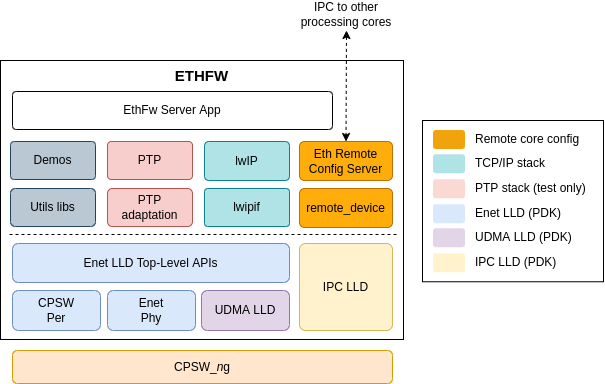

Introduction
The Ethernet Firmware (EthFw) is the FreeRTOS based application for configuration of Ethernet switch peripheral (CPSW5G or CPSW9G) present in the Jacinto 7 devices.
The Ethernet Firwmare contains remote configuration server, resource management library, switch resident protocols, proxy layers to handle local and remote API calls. The Ethernet Firmware runs on the Cortex R5F core in the Main Domain of the Jacinto 7 family of devices.
The switch software uses the TI Platform Development Kit (PDK) driver for the Common Platform Switch (CPSW) peripheral as well as drivers for other auxiliary peripherals like UDMA, UART, etc.

Ethernet Switch Software Architecture
Back To Top
Functional Overview
- Ethernet Firmware is integrated into the RTOS SDK, Linux SDK and QNX SDK software products for J721E and J7200 devices.
- Ethernet Firmware is an application based on the FreeRTOS operating system in charge of configuring the Ethernet switch peripheral and setting up data paths to processing cores internal of the Jacinto 7 devices.
- Ethernet Firmware enables automotive use-cases like I/O hub, central gateway, network firewall, security, etc.
- Ethernet Firmware enables multi-core architectures where network data can be steered towards processing cores by means of classification of network traffic based on packet characteristics like L2/L3 header.
- Ethernet Firmware offers switch resident protocols via lwIP stack.
- Ethernet Firmware is configurable programmatically via software API from remote client cores or runtime via network with a GUI host application.
- Ethernet Firmware offers a debug infrastructure to dump DMA statistics, CPSW switch registers and PHY registers.
Back To Top
Assumptions and Constraints
- Code is written using ANSI C language.
- MISRA-C guidelines are followed, with certain waivers approved by TI Embedded Processors software group.
- Ethernet Firmware application is loaded by another software entity. For instance, remoteproc in Linux, SPL or SBL.
- TCP/IP stack integration is done using the lwIP TCP/IP stack.
Back To Top
Features Supported
- Basic L2 switching
- VLAN
- RMII, RGMII, SGMII and QSGMII interface types
- 100Mbps and 1Gbps
- Clause-22 PHY
- Clause-45 register read/write APIs
- Host port (CPPI) packet Tx/Rx
- IPC-based switch configuration from remote client cores
- Linux integration on Cortex-A72 remote core (Linux SDK)
- FreeRTOS integration on Cortex-R5F remote core (RTOS SDK)
- AUTOSAR integration on MCU Cortex-R5F remote core (RTOS SDK)
- TCP/IP stack
- Multicast switching
- InterVLAN routing
- Network security
- Classifier and policer
- QoS and packet priority regeneration
- Traffic shaping
- Time synchronization (CPTS APIs)
Back To Top
Features Not Supported
The following features are not supported in the current release:
- Time-aware scheduling
- QNX integration
- Port mirroring
- Port trunking
- Interspersing express traffic
- Time sensitive networking
- Switch compliance
Back To Top
Document Revision History
| Revision | Date | Author | Description | Status |
| 0.1 | 22 Oct 2019 | Misael Lopez | First version | Draft |
| 1.0 | 28 Jan 2020 | Misael Lopez | Updates for SDK 06.02.00 | Approved |
| 1.1 | 25 Feb 2022 | Misael Lopez | Updates for SDK 08.02.00 | Approved |
 1.8.14
1.8.14